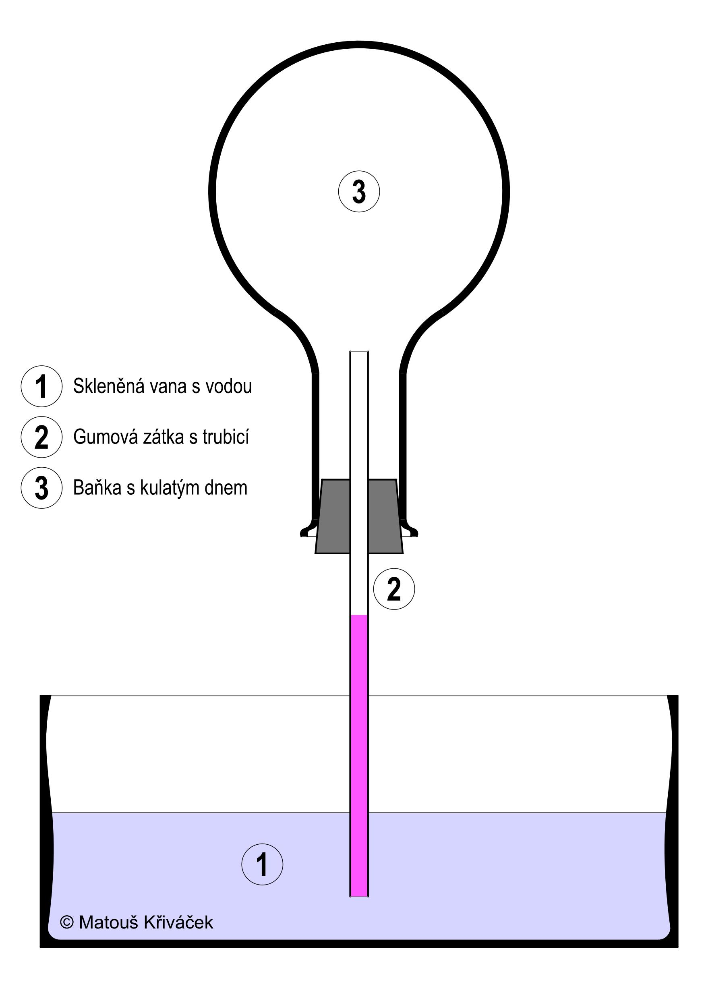
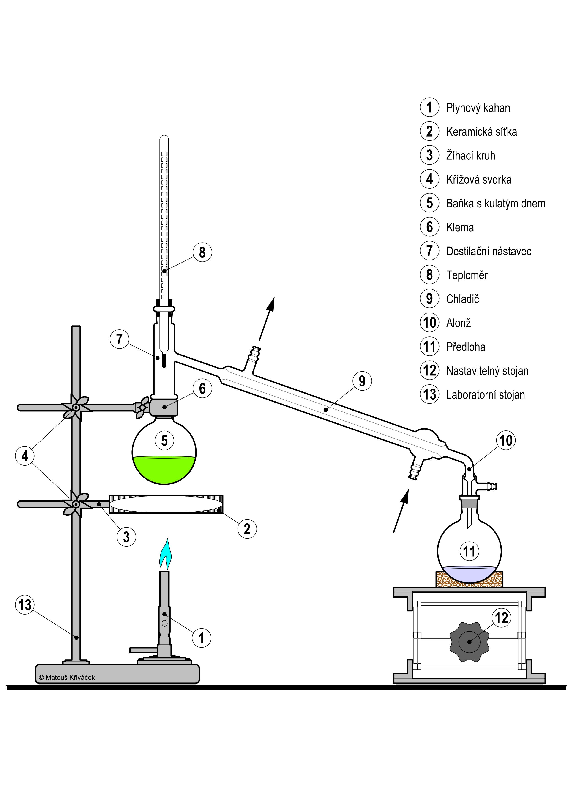
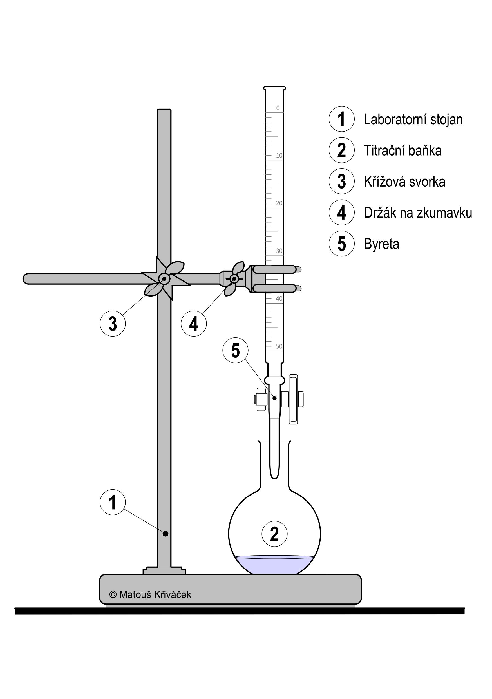
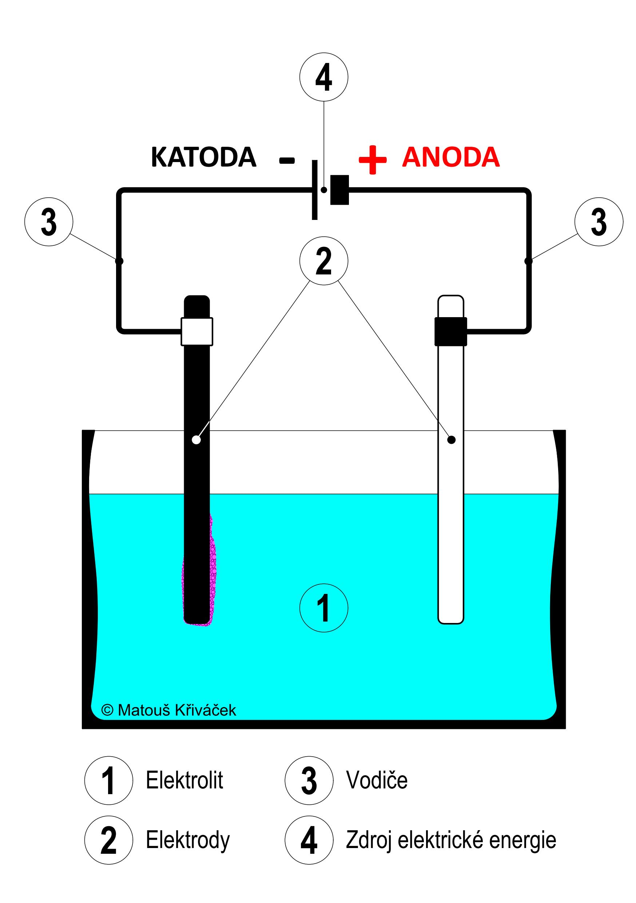
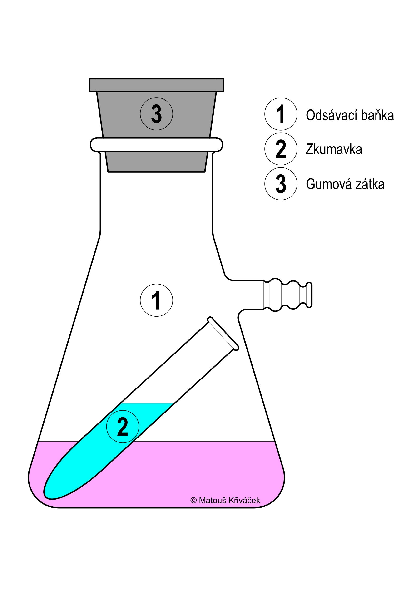

ÚVOD
ZÁKLADNÍ ŠKOLY
STŘEDNÍ ŠKOLY
GALERIE
X
GALERIE

Amoniaková fontána

Jednoduchá destilace
Propan-butan

Titrace

Elektrolýza

Hasící přístroj
Příprava nasyceného roztoku
Práce s plyny 1
Práce s plyny 2
Vodní lázeň - Rychlost chemické reakce
Žíhání - Příprava oxidu chomitého
Filtrace - Příprava oxidu chomitého
Destilace vodní parou
Odsávání - Příprava jodoformu
 X
X


 X
X